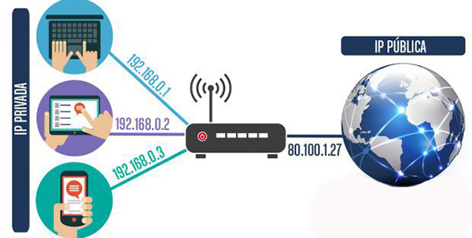

Desde que se inventó el protocolo de Internet en 1982, las direcciones IP han sido una pieza fundamental para la conexión de dispositivos a la red mundial. Esta dirección numérica se utiliza para identificar de manera única cada dispositivo en una red de computadoras, y permite a los dispositivos comunicarse entre sí y compartir información.
Una dirección IP consta de números separados por un punto, y puede ser de dos tipos: IPv4 e IPv6. IPv4 es el estándar más utilizado actualmente y se compone de cuatro conjuntos de números que van del 0 al 255, mientras que IPv6 consiste en ocho conjuntos de cuatro dígitos hexadecimales, separados por dos puntos. El uso de IPv6 se está expandiendo cada vez más debido al agotamiento de direcciones IPv4.
Cada dispositivo conectado a una red, ya sea en una oficina, en casa o en cualquier otro lugar, necesita una dirección IP única para poder acceder a Internet. Esta dirección se asigna automáticamente mediante el uso de un protocolo de red llamado Dynamic Host Configuration Protocol (DHCP), que permite a los dispositivos conectarse a la red sin intervención manual por parte del usuario.
Las direcciones IP también se pueden asignar estáticamente, lo que significa que se establece manualmente una dirección para un dispositivo en particular. La ventaja de las direcciones IP estáticas es que el dispositivo siempre tendrá la misma dirección en la red, lo que hace que la administración y la conectividad sean más fáciles de gestionar. Sin embargo, el uso de direcciones IP estáticas también puede llevar a conflictos con otras direcciones en la red, lo que a su vez puede causar interrupciones en la conexión.
Además, no todas las direcciones IP son válidas para cada red. Las direcciones IP se dividen en diferentes clases, cada una con su rango de direcciones específico. A su vez, las direcciones pueden ser públicas o privadas. Las direcciones IP públicas se utilizan en Internet y son únicas para cada dispositivo en todo el mundo, mientras que las direcciones IP privadas se utilizan en redes internas, como en una oficina o en un hogar, y no son visibles desde Internet.
El conjunto de direcciones IP públicas están asignadas y controladas por la Internet Assigned Numbers Authority (IANA), que es una organización sin fines de lucro que se encarga de la asignación de direcciones en todo el mundo. La IANA asigna bloques de direcciones IP a organizaciones regionales, que a su vez asignan bloques a sus respectivos países. Estas organizaciones regionales son la Regional Internet Registries (RIRs), que son las encargadas de administrar las direcciones IP en su área de influencia.
Las direcciones IP desempeñan un papel importante en la seguridad de la red. Los firewalls y otros sistemas de seguridad pueden utilizar las direcciones IP para bloquear o permitir el acceso a la red. Los ataques malintencionados, como los ataques DDoS, también pueden ser bloqueados mediante el bloqueo de direcciones IP específicas.
En resumen, las direcciones IP son esenciales para la conectividad de dispositivos en una red y son necesarias para que los dispositivos se comuniquen entre sí y accedan a Internet. La asignación y la gestión de direcciones IP son gestionados por organizaciones y protocolos específicos, como la IANA y el DHCP. Las direcciones IP también desempeñan un papel importante en la seguridad de la red, ya que pueden ser utilizadas para bloquear o permitir el acceso.